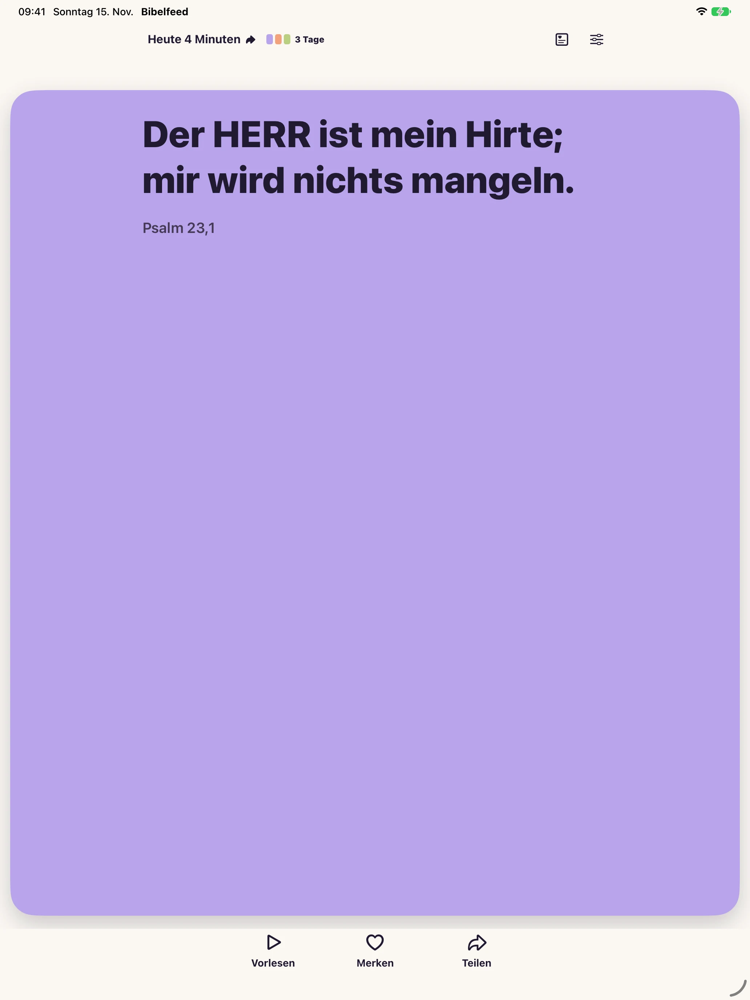

Ein Psalm Davids. Der HERR ist mein Hirte; mir wird nichts mangeln.
Psalm 23,1BIBELFEED · LUTHERBIBEL 1912
Bibelfeed
Ein Wisch.
Ein Vers.
Lutherbibel 1912
Ein Wisch.
Ein Vers.
Ein Psalm Davids. Der HERR ist mein Hirte; mir wird nichts mangeln.
Psalm 23,1
Und Gott sprach: Es werde Licht! und es ward Licht.
1. Mose 1,3
Selig sind die Friedfertigen; denn sie werden Gottes Kinder heißen.
Matthäus 5,9
Scroll durch die Bibel.
Einen Vers nach dem anderen.
09:41▮▮▮ ▰
Heute 3 MinutenDemo
Und Gott sprach: Es werde Licht! und es ward Licht.
1. Mose 1,3Selig sind die Friedfertigen; denn sie werden Gottes Kinder heißen.
Matthäus 5,9Psalmen und Verse hören
Worte.
Die bleiben.
Die Stimme deines iPhones liest fortlaufend.
Hier als stille Vorschau.
09:41▮▮▮ ▰
Heute 3 MinutenDemo
Selig sind die Friedfertigen; denn sie werden Gottes Kinder heißen.
Matthäus 5,9Selig sind die Friedfertigen; denn sie werden Gottes Kinder heißen.
Matthäus 5,9
Mit dem Herz gespeichert
Diesen Vers
willst du behalten.
Speichere ihn mit dem Herz.
Dein Vers. Zum Wiederlesen.
Und Gott sprach: Es werde Licht! und es ward Licht.
1. Mose 1,3Selig sind die Friedfertigen; denn sie werden Gottes Kinder heißen.
Matthäus 5,9Ein Psalm Davids. Der HERR ist mein Hirte; mir wird nichts mangeln.
Psalm 23,1Bibelfeed auf dem iPad
Mehr Raum.
Für jedes Wort.
Deine Bibel. In deinem Rhythmus.

Lutherbibel 1912 · Bibelfeed auf dem iPad
Dein Moment bleibt bei dir.
Kein Konto.
Kein Server.
Keine KI.
Du brauchst kein Konto.
Bibelfeed kommt ohne Server und KI aus.
Noch ein Wisch. Noch ein Vers.
Bibelfeed

Lutherbibel 1912
Bibelfeed
So funktioniert Bibelfeed
Öffnen
Wähle Deutsch oder Französisch. Du brauchst kein Konto.
Lesen oder hören
Wische zum nächsten Vers oder lass die Gerätestimme vorlesen.
Wiederfinden
Tippe auf das Herz, um einen Vers auf deinem Gerät zu merken.
Die echte App
Sechs Einblicke.


Wo möchtest du anfangen?
Fragen und Antworten
Welche Bibelübersetzung lese ich?
Du liest die Lutherbibel 1912 auf Deutsch. Auf Französisch verwendet Bibelfeed die Louis Segond 1910. Beide Texte sind gemeinfrei.
Kann ich offline lesen?
Ja. Der Bibeltext ist in der App enthalten. Du kannst ohne Internetverbindung lesen. Die Vorlesefunktion verwendet die auf deinem Gerät installierten Stimmen.
Brauche ich ein Konto?
Nein. Du kannst Bibelfeed ohne Registrierung und ohne Anmeldung verwenden.
Welche Daten sammelt die App?
Die App hat keinen eigenen Server, kein Konto und kein Tracking. Gemerkte Verse und dein Lesestand bleiben auf deinem Gerät. Käufe und Abonnements wickelt Apple ab.
Kann ich mir Verse vorlesen lassen?
Ja. Die Stimme deines iPhones liest die Verse fortlaufend vor. Verwendet werden die Stimmen, die auf deinem Gerät installiert sind.
Gibt es ein Widget?
Ja. In Version 1.0 gehört das Widget „Vers des Tages“ zur kostenlosen App. Du fügst es über den Home-Bildschirm deines iPhones hinzu.
Wie merke ich mir einen Vers?
Tippe in der App auf das Herz. Der Vers wird auf deinem Gerät gespeichert, damit du ihn später wiederlesen kannst.
Was bietet Bibelfeed Plus?
Plus ermöglicht unbegrenzt viele Karten und unbegrenztes Vorlesen. Außerdem schaltet es die Designs Papier und Nacht frei. Das Widget ist auch ohne Plus verfügbar.
Funktioniert Bibelfeed auf dem iPad?
Ja. Bibelfeed ist für iPhone und iPad verfügbar. Die Website zeigt auch einen echten Bildschirm der iPad-App.
Wie kündige ich ein Abonnement?
Öffne die Einstellungen deines iPhones oder iPads, tippe auf deinen Namen und dann auf Abonnements. Dort kannst du Bibelfeed auswählen und das Abonnement über Apple kündigen.